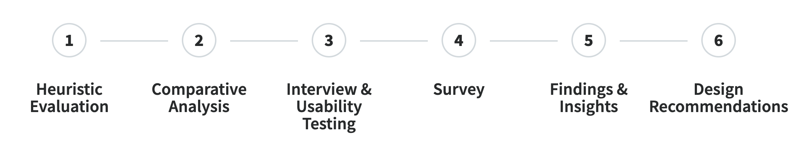
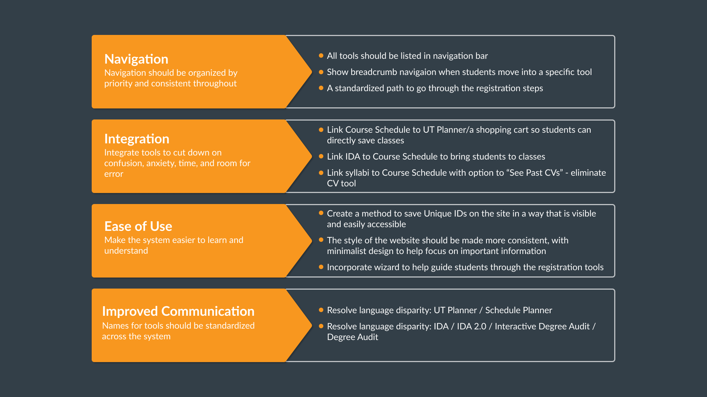
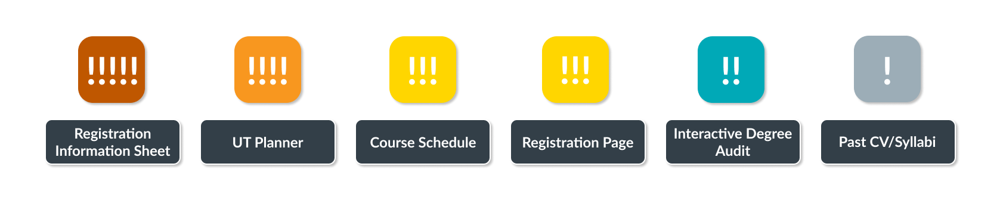

Usability Report of Course Registration
The University of Texas at Austin
Project aim
The usability assessment is conducted to identify the uability problems in the process of registering classes. The clients, UT Austin, are interested specifically in which systems students use, how well those systems integrate, and how they might make improve the process.
Type
Course Project
Duration
3.5 months, Sep 2019 - Dec 2019
Team
Claire Chang, Beth Sarno, Chloe Reshetar-Jost, Gabriel Bailey, Takahiro Ishii
My role in the project
- Conducted competitive analysis to compare the strengths and weaknesses of competitors and make suggestions to the current system.
- Developed user journey map to identify pain points through the registration process.
- Formatted survey on Qualtrics for the whole class, and took full responsibility to extract result findings and graphs.
- Analyzed usability testing and survey results to investigate user problems and provide recommendations.
Methodology and tools
- Heuristic evaluation, comparative analysis
- Interview, usability testing, Qualtrics, survey
- Affinity diagram, user journey map, wireframing
Problem Background
State initiatives seek to increase UT 4-year graduation rate. Students need to take classes that fit the requirements to graduate on track. However, registration is a very high-stress activity for many students.
Research Methodology
Heuristic Evaluation
Based on Nielson Norman's 10 Heuristics, we conducted heuristic evaluation on the current UT registration tools to find out the current usability issues.
Key findings
- Consistency and Standards: It seems that each tool is designed by different entities, so some features such as navigation and page structure are inconsistent across tools.
- Recognition rather than Recall: It's hard for first-time users to recognize where to click to the next step, and sometimes users have to remember where to see specific information.
- Aesthetics and Minimalist Design: Several pages show unnecessary information or too many details.
Comparative Analysis
3 director competitors and 3 indirect competitors are investigated to understand the strengths and weaknesses comparing to UT system.
Key findings
Following are 3 design features that have not existed or can be improved on UT tools.
- Integration: Functionality that allows users to navigate between registration tools and contains them in one system.
- Shopping Cart: Tool for users to save courses in enrollment system to quickly enroll during registration time.
- Feedback and Visibility: System feedback to let users know why they might/have encountered an error.
Interview & Usability Testing
We interviewed 6 students with different grad levels (junior, senior), departments, and special classifications (international students, changed major).
Before the interviews, we identified and categorized 7 registration processes and 7 corresponding UT tools. These processes and tools are the foundations of the usability test.
During the interviews and usability testing, the interviewees shared their experiences using UT tools and walkthrough their last registration experiences first. Then, they were asked to think aloud and try to complete 7 tasks. We recorded the difficulties and feelings they experienced for the next step.
7 Registration steps & tools
- Degree Planning - Interactive Degree Audit
- Class Selection - Course Schedule
- Researching Courses - Past CV/Syllabi
- Schedule Building - UT Planner
- Registration Bars and Times - Registration Info Sheet (RIS)
- Registering for Courses - Registration Website
- Waitlisting - See My Waitlists
Survey
The survey is conducted to evaluate the usage of UT tools with a bigger dataset. There are 33 questions in the survey, and 52 responses are collected.
I formatted the survey on Qualtrics for the whole class, including question logic, piping, ranking order. Also, I took full responsibility to extract result findings and graphs.
Key findings
- Registration difficulty: 41.8% didn't successfully register all intended classes, and 72.23% of which didn't successfully register are because the class is already full.
- Reflection on tools: UT tools such as UT Planner lack awareness, and some tools such as RIS are commonly used but ranked not useful.
- Satisfaction: Nearly half of the students replied feeling stressful about registration process, and not getting in class affects their graduation plans.
Insights & Recommendations
Students have to use multiple tools during registration process. Among the whole system, how to help them easily navigate and use these tools and how to improve integration and communication between tools would be the most needed goals.
Based on our findings, the order of the importance to improve specific tools is listed:
- Registration Information Sheet: Unknown bars and registration times kept several interviewees from registering as soon as their time window opened.
- UT Planner: Schedule planning is a vital part of preparation, but UT Planner is the least utilized tool.
- Course Schedule: All students use Course Schedule but then must rely on outside tools to save Unique IDs.
Redesign